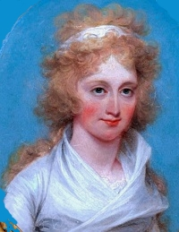

Cornelia Schuyler Morton
by
Cornelia Schuyler was born in December 1775. She was a younger daughter of General Philip Schuyler and his wife Catharina Van Rensselaer Schuyler. She grew up in a large family in the best Schuyler homes in Albany, its hinterland, and on her father's farm at Saratoga.  We have not yet accounted for the fact that later, she sometimes was referred to as "Cornelia Lynch Schuyler Morton."
According to traditional (romantic) sources, Cornelia's courtship and marriage were fraught with drama. Over her father's objections, the couple eloped. In October 1797, Cornelia married New Jersey native Washington Morton, probably in western Massachusetts. The marriage is said to have produced five children.
Her mother had passed on in March 1803. In June 1803, she was named among the children and heirs in will filed by her father. She was to receive a proportional share of his substantial estate including a portion of the Saratoga Patent. The will passed probate in December 1804.
At that time, these Mortons were living among his family at "Greenwich" - a family estate which was said to have been two miles from New York.
Their marriage, however, was a short one as "Cornelia Lynch Schuyler Morton" died in Philadelphia in June 1808. The news note added "Her worth is very highly extolled." She had lived but thirty-two years.
notes
 Sources: Sources: The life of Cornelia Schuyler Morton is CAP biography number 1257. This sketch is derived chiefly from family and community-based resources. A somewhat puzling biographical note appears in CSG, vol 2, pp.44-45.
Washinton Morton (aka George Washington Morton) is said to have been born in 1774 in Elizabethtown, New Jersey. His parents were John and Maria Sophia Kempe Morton. A Princeton graduate, he was a militia officer, prominent New York City attorney, and an exceptional character. He is said to have been so disraught by Cornelia's death that he travelled to France where he died in 1810.
Portrait: Cropped detail of a miniature painting by John Trumbull. In the collection of the Yale University Art Gallery. Dated at 1792 when Cornelia would have been about seventeen. Copied from an online posting.
Volume 18 (July-December 1887) of The Magazine of American History with Notes and Queries, contained a romanticized account of the the courtship and subsequent ordeal by the incomparable "Mrs. Martha Lamb." Biographical material on Morton is excerpted from it and is included for accessibility: "Mrs. Hamilton's younger sister, Cornelia, came to spend the winter of 1796-1797, and Washington Morton fell madly in love with her. She was a charming girl, though by no means a belle. She had dark brown hair, which she wore parted in waves over a low white forehead; eyes of deep blue-gray, so shaded and shadowed by lashes that they seemed black in the imperfect light; complexion of that clear paleness which better interprets the varying phases of feeling than a more brilliant color, and a small, rosy mouth with all manner of little lights playing about it, and a slight compression of the lips, betokening strength of will. Her beauty was really of that soft and touching kind which wins gradually upon the heart rather than the senses. Her nature, too pliant and clinging for the role of social leadership, which so well became Mrs. Hamilton, had yet a firmness that promised full development through her affections. She was one of the wedding guests when the sister of her lover was married in June, and was radiant on that memorable occasion. The attachment of the handsome young pair was well known to the Morton family; and ere long Miss Cornelia returned to her home in Albany, attended by Washington Morton, who sought an immediate interview with General Schuyler, asking the hand of his daughter in marriage.
Alas! the course of true love was not destined, in this instance, to run smoothly. The sagacious old chieftain was in no hurry to consign his sweet young daughter to the care of a volatile, headstrong youth of twenty-two, however brilliant his prospects and possibilities. He refused to consider the question until the ambitious aspirant should have "slackened his pace to the sober rate befitting a steady-going married man." Young Morton urgently pressed his suit, which angered General Schuyler, who imperiously ordered the ardent lover to attempt no further communication with his daughter. He even went so far as to escort the young man to a boat for New York, and saw him safely on his voyage down the Hudson.
"Come into the library," said the austere father to the blushing Cornelia, as he encountered her on the veranda upon his return to the house. When she had seated herself at his feet, in an attitude of deep dejection, he related what had passed between himself and Washington Morton, adding, "My wishes will, of course, be respected. Promise me to have nothing hereafter to do with him, either by word or letter." "I cannot, sir," was the quick response. "What! do you mean to disobey me?" "I mean that I cannot bind myself by any such pledge as you name, and—I will not."
To chronicle the scene that followed would not be an easy task. General Schuyler, whose word was law in his family, nearly lost his breath. He was amazed beyond expression, and took measures to compel the obedience so unexpectedly withheld by his hitherto amiable and dutiful daughter. Washington Morton, however, was not a man to be turned from his purpose by any such obstacle. He soon found a method whereby to smuggle a letter into the hands of the young lady, in which all a lover's fond hopes and blissful anticipations were depicted in glowing colors. He also gave her the plan of his future course of action, and asked for her cooperation, which was not denied.
Days and weeks passed on. The foliage was beginning to assume its autumn styles; and the cool days of October were being welcomed with cordial fires in the old Schuyler mansion. One night, when the stars were shining peacefully from a cloudless sky, the lover came for his bride. The hour was midnight. The lights had long since been extinguished in the Albany homes, and deep silence throughout the ancient city was unbroken by voice or footstep. Presently two figures wrapped in cloaks were moving swiftly along the deserted streets. One was of princely bearing, the other lithe and graceful. In front of the Schuyler house they paused, sprang lightly over the fence upon the velvety turf of the yard, and gave a signal. A window was gently and slowly raised; one of the gentlemen threw up a rope which was caught and tied; a rope ladder was drawn up, and after a few minutes again lowered; the gentlemen pulled forcibly to ascertain that it was securely fastened, and Cornelia Schuyler stepped out upon the ladder and slowly accomplished her descent in safety. A rapid walk followed, and in a few moments the party reached the shores of the Hudson, where a small row-boat was in waiting to convey them to the opposite shore. As they landed a pair of fine horses were to be seen pawing the earth impatiently. The young lady was lifted upon one of these, and her gallant cavalier mounted the other. They bade a hasty adieu to the friends who had assisted in the escapade, and rode off gayly toward the rising sun. Between thirty and forty miles distant was the town of Stockbridge, and straightway to the home of Judge Theodore Sedgwick the runaways proceeded, as he was the common and intimate friend of both families. Presenting themselves before that excellent magistrate, who doubted the evidence of his own eyes when he beheld the singular apparition, they told the story of their engagement and their flight. Of course there was but one thing to do. The clergyman of the place was summoned to the Sedgwick homestead, and the handsome twain were made one with all convenient dispatch. It was a sad blow to General Schuyler, and many months elapsed before he consented to indulge in a forgiving spirit; but he loved his daughter, and had in reality no very grave objections to her dashing husband further than his youth—which, with time enough, might be cured—and in the end he yielded to what he could not help, with the best grace that he could muster."
first posted: 1/30/13
|